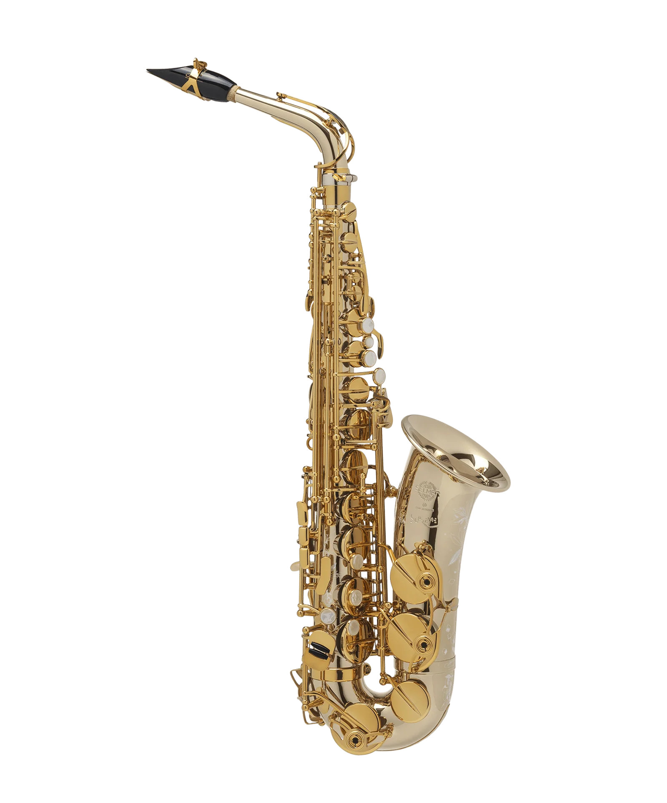
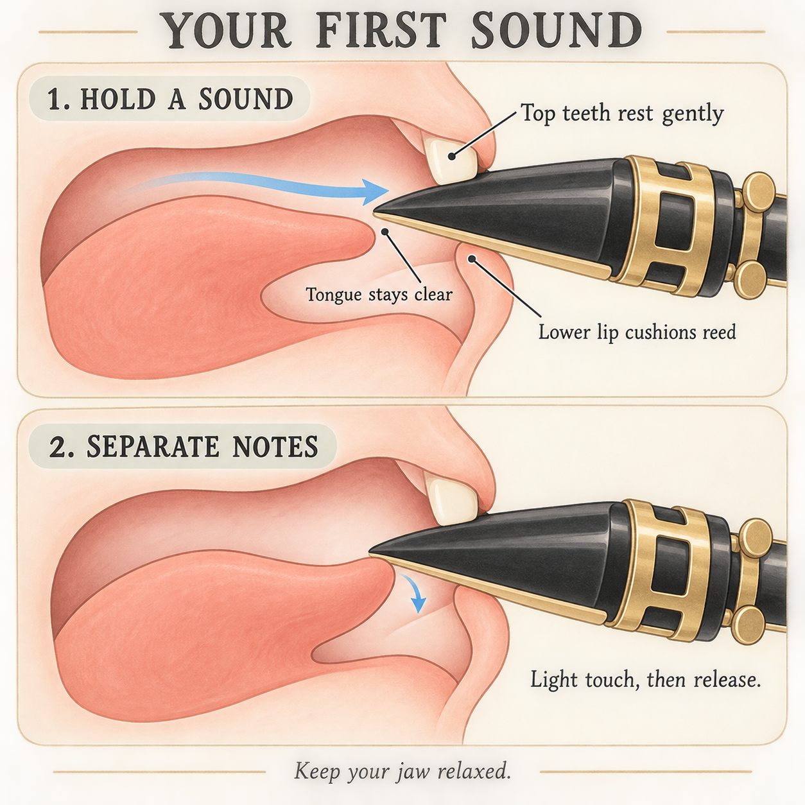
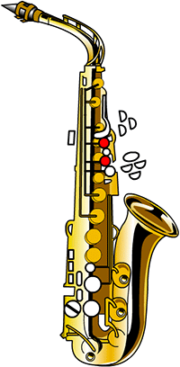
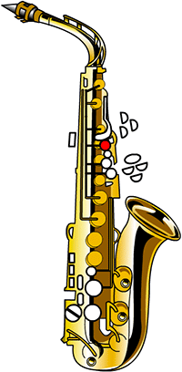
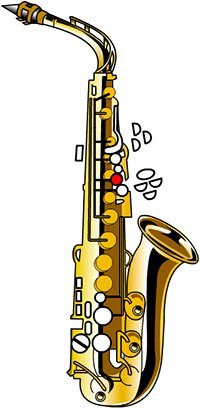
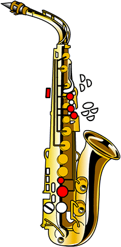
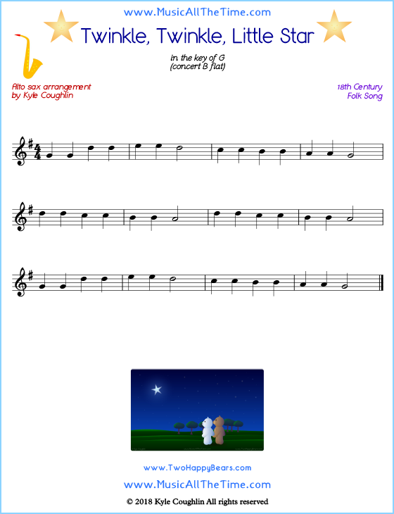
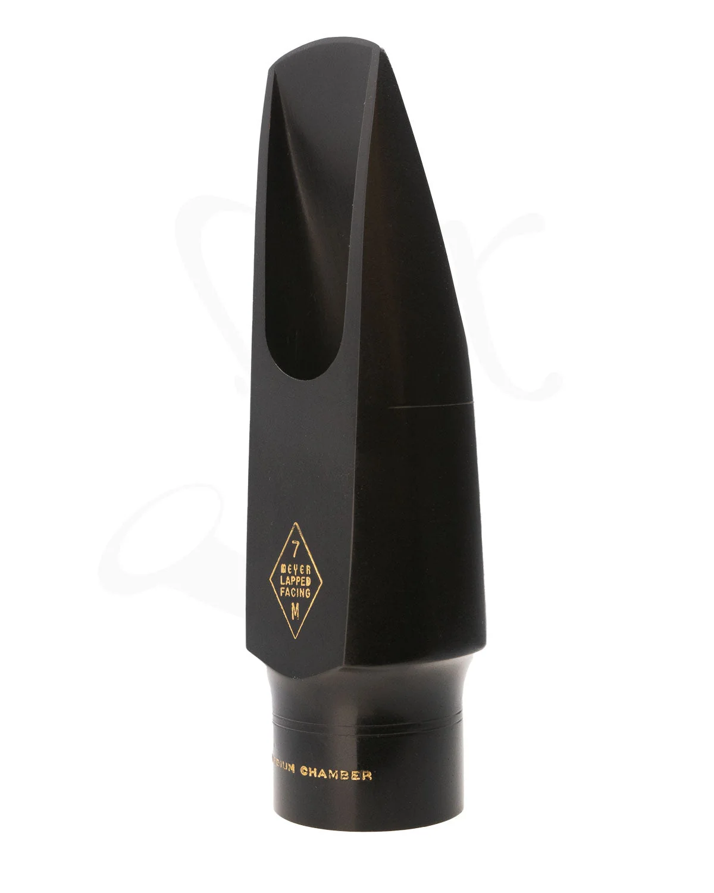

Learn Saxophone with Alvin
I’ve been playing the saxophone since I was a kid. It was hard at first. Just making a sound was difficult, and getting the pitch right was even harder.
Despite all that, playing an instrument is cool—real cool. You can show off to your friends or try playing a song you’ve just heard.
I love its rich, expressive sound and the way it lets me share my feelings through music. After exploring this website, maybe you’ll want to try it yourself.
You can follow along even if you don’t have a saxophone.
Part 1: The alto saxophone

Why I’m teaching alto saxophone
I play all types of saxophones, but I mostly play alto and tenor. Soprano and baritone feel a little different to me. I find that the baritone requires steadier breath support, while the soprano feels more like playing a clarinet.
For this beginner lesson, we’ll focus on the alto saxophone.
“In my opinion, the Selmer Supreme is one of the best saxophones you can buy.”— Alvin
You don’t need this particular model to follow along—just a working alto saxophone.
Parts of the saxophone
Part 2: Assembly
Have your alto saxophone, mouthpiece, reed, ligature, and neck strap ready. No instrument? That’s completely fine. Explore the pictures and follow along.
Select an illustration to see it larger. Illustrations created with AI.
Part 3: Your first sound
Start with one steady sound. Watch how the lips, teeth, and tongue work together—then give yourself time to try.

Part 4: Twinkle, Twinkle, Little Star
Take it one note at a time. Use Previous and Next to follow the melody. The red keys on the saxophone show what to press.
Left: index, middle, and ring. Right: no keys.
One beat per letter. A dash holds the note one extra beat.
Fingering illustrations by Yamaha
See all six fingerings
| Note | Keys to press | Octave key |
|---|---|---|
| G | Released | |
| A |
 |
Released |
| B |
 |
Released |
| C |
 |
Released |
| D | Pressed | |
| E |
 |
Pressed |
Read the sheet music

Sheet music: Kyle Coughlin / Music All the Time
This score uses written saxophone notes. On alto, written G sounds as concert B♭.
Part 5: Test yourself

What is this part called?
How did your first lesson go?
Tell me how your first lesson went and what you found difficult.
Take a moment to reflect. Your answers stay on this page and aren’t sent anywhere.
My high school performance
This video was recorded when I was in high school. I also used it as part of my college application.